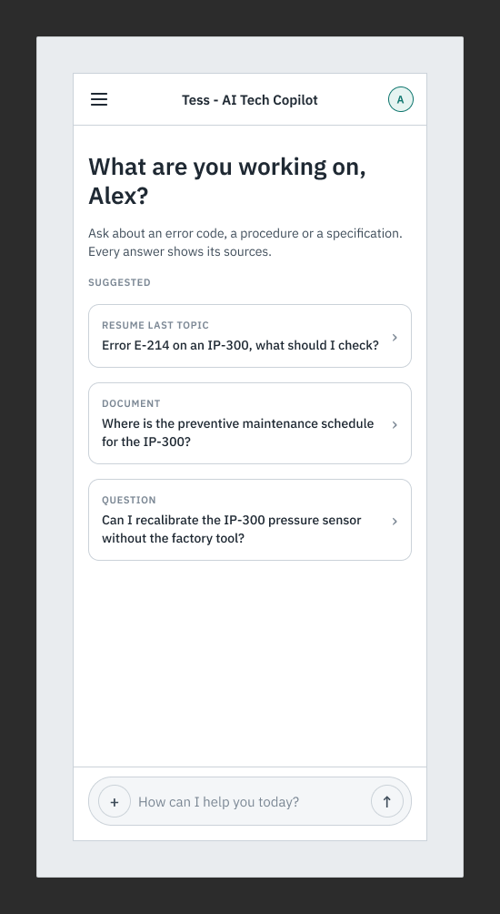
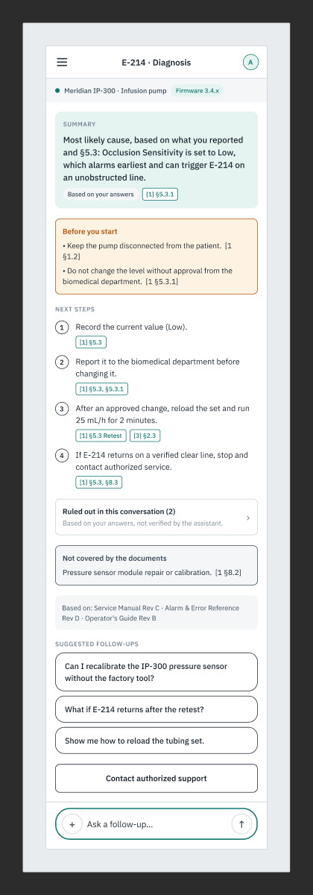

An AI assistant that helps field engineers find, understand and verify technical information, built mobile first.
Yuri Saback · Senior Product Designer
Installs, inspects and repairs medical equipment in hospitals and clinics, moving between sites.
Design hypothesis, not research
Manuals, specifications, error codes and troubleshooting guides live in different places. Finding the right one takes time, and the person needs it while standing at the equipment.
"When I need to inspect, maintain or troubleshoot a medical device, I want to find the relevant technical information and understand the next steps, so I can work efficiently while following authorized procedures."
Alex works in many places and the phone is the fastest tool at hand. I designed for the phone first. The prototype also has a desktop version, a static preview, but the focus is mobile.
Searches manuals, specs and procedures from a single query.
Summary, warnings, steps, for this equipment.
Shows the source, says what it could not substantiate, points to support.
Behind all five: the AI agent must be very well structured, so its research stays coherent with the project and with the user who is searching.
The assistant supports the professional. It never authorizes a procedure or replaces manufacturer instructions.
A responsive, interactive prototype with at least 3 final screens, evaluated on reasoning, UX structure, simplification, visual quality, work with AI and autonomy.


Fictional Meridian IP-300 infusion pump, error E-214. Tess asks short questions until the likely cause appears, so the user stays in control.
The demo cannot fail: each turn has one active action, so every evaluator reaches the same complete story.
Wireframes for mobile (M1–M7) and desktop (D1–D2). The mobile flow is fully testable; desktop is a static preview.
| Decision | Why |
|---|---|
| Tess asks for the firmware instead of assuming it | A wrong equipment context gives a wrong procedure |
| A citation on every step, inside the text | Verify without leaving the answer; no separate source list |
| Warnings come before the steps | A warning below the steps gets missed |
| Source text and AI explanation in separate blocks | Never blend a quote with a paraphrase |
| "Ruled out" is labelled "not verified by the assistant" | Show the limits of what was checked |
| Insufficient evidence: no steps, escalation first | Never fill a gap with plausible steps |
| Dark mode only, contrast checked | One theme fully verified beats two half-verified |
| No hover, 44 px primary targets | Touch first; pressed state instead of hover |
All of these decisions follow the hypotheses, requirements, risks and guardrails defined in the PRD created at the start of the project (sections 4, 8, 9 and 10).
Graphite & Teal, picked from three MedTech proposals. Calm, technical, high contrast for hospital light.
IBM Plex Sans
Plex Mono for quoted source text
Figma variables carry code syntax and mirror tokens.css, so design and prototype cannot drift.
No equipment assumed. Suggested queries and a ready message field.
Tess asks for the firmware and what the pump shows, and records each answer.
Summary, warnings first, a citation on each step, what was ruled out and what is not covered.
The prototype includes a desktop version, a static preview that is not interactive. Use the "View desktop version" button under the phone. This presentation focuses on mobile, the tested experience.
The third strategic screen: traceability is the concept's differentiator and the direct answer to the fabrication and overreliance risks.
A variant of the response screen, built from the same components.
Every phase ended with my review and approval before the next one started.